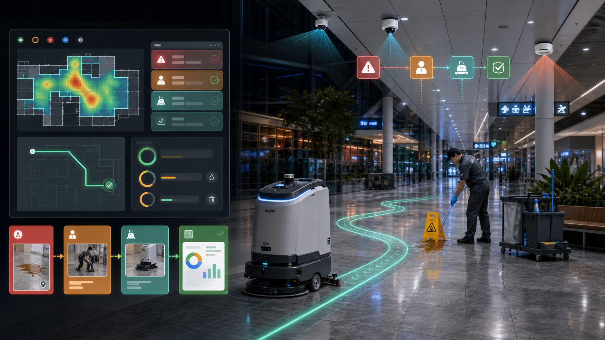

哪里脏
入口、卫生间、餐饮区、货架通道、停车场和事故点的需求变化快。
Pitch 56 · Commercial Cleaning Operations Loop
CleanLoop 是面向物业、保洁承包商、机场、商场、医院非临床区、园区和仓库的清洁运营塔台：把人流、污染点、保洁员、清洁机器人、人工接管和清洁证据连成可调度、可验收、会改进的服务闭环。
01 · Problem
设施负责人和保洁承包商每天面对的是排班难、流动率高、夜间监督弱、SLA 难证明、手工检查表滞后，以及机器人厂商后台和保洁工单割裂。
入口、卫生间、餐饮区、货架通道、停车场和事故点的需求变化快。
机器人能做大面积地面，保洁员处理边角、垃圾、补给、异常和客户投诉。
客户续约、SLA 争议和财务 review 需要覆盖面积、时间戳、照片和签核。
堵路、缺水、低电、漏扫和人工接管如果不进入数据，下次还会发生。
02 · Why Now
2026 年的市场问题不是“机器人会不会走路线”，而是如何少人值守、少部署工程师、少日常维护，并把清洁结果交给客户和财务。
03 · Insight
客户不是为“机器人跑了一圈”续费，而是为少漏扫、少投诉、少返工、少夜班盯人和可审计 proof-of-service 续费。
人流、投诉、传感器、工单、时间段和风险点生成 Clean Priority Map。
机器人负责重复地面覆盖，人负责细节、补给、异常和客户感知。
路线、覆盖、跳过区域、照片、接管、耗材和 SLA 自动组成证据包。
04 · Solution
它把楼层图、SLA、机器人、保洁员、传感器、工单、异常和客户报告统一成一张清洁塔台。主管不再追 20 个群消息，只看异常队列和证据报告。

05 · Product Workflow
第一版 demo 不需要完整商场，只要楼层图、路线、污渍点、机器人模拟和保洁员接管，就能展示商业闭环。
人流、投诉、相机/传感器或巡检把入口、卫生间、通道变成高优先级区域。
CleanLoop 派机器人清地面，派保洁员处理边角、垃圾、污渍和客户投诉。
Qualcomm edge 在现场识别障碍、污渍、湿滑牌、人群和漏扫。
覆盖轨迹、跳过区域、照片、耗材、签核和时间戳组成清洁证据。
人工接管和失败片段进入 LeRobot dataset，下一班次和 edge 模型更准。
06 · Market Wedge
CleanLoop 的首单应选择能捕捉 labor redeployment 和 proof-of-service 价值的场地，而不是普通小办公室。
高人流、突发污染、湿滑风险、夜间运行和可追溯清洁记录。
入口、餐饮区、卫生间、货架通道和客户投诉驱动动态清洁。
大面积硬地面、夜班、叉车/AMR 通道、安全审计和重复路线。
低噪、避人、隐私、清洁频率和审计证据要求高。
多楼、多班次、多外包团队，需要统一服务标准和报告。
用机器人证据包赢固定价格合同、续约和服务质量争议。
07 · Business Model
CleanLoop 不按普通软件座席收费，而是锚定少一个重复地面清洁 FTE、少返工、少投诉和服务合同续约。
海外 10k-25k 美元；中国 10-40 万元，8-12 周验证 coverage、接管和 proof。
1.5k-3k 美元 / site / month，覆盖地图、工单、证据、报告和集成。
1k-3k 美元 / robot / month，客户已有或租赁机器人时收运营层费用。
机器人、维护、软件、报告和训练打包；中国版支持低门槛租赁生态。
08 · Go-To-Market
试点必须让设施负责人、财务或客户合同经理看到结果，而不是只让机器人运营员看到地图。
50k+ sq ft、每周 5 晚重复清洁、可调整 staffing 或外包合同的硬地面场地。
一条机器人地面路线 + 一个保洁员异常队列 + 一个主管证据 dashboard。
入口、卫生间、餐饮区、仓库通道、停车场、多楼层和多品牌机器人。
机器人 OEM、BSC/IFM 服务商、CMMS/IFM suite 和 Qualcomm edge 生态。
09 · Competition
CleanLoop 不替代清洁机器人厂商，也不替代保洁软件。它把多品牌机器人、人工工单、现场证据和训练数据接起来。
单机成熟、渠道强、规模大；CleanLoop 做跨品牌任务、证据和客户报告层。
产品线和部署强；CleanLoop 统一多品牌 fleet 和人机交接。
清洁机器人竞争加速；CleanLoop 把设备结果变成设施服务报告。
传统设备渠道强；CleanLoop 提供 facility-level ROI 和 HIL 数据层。
保洁运营软件强；CleanLoop 原生连接机器人、edge perception 和训练闭环。
工单和资产强；CleanLoop 做实时清洁执行层和 proof layer。
10 · Moat
每个站点都会沉淀自己的高风险区、堵点、投诉点、覆盖记录、接管策略、客户报告和模型 profile。
高风险区、堵点、投诉点、湿滑点、频率、班次和人工接管历史。
路线、覆盖足迹、跳过区域、耗材、缺水、低电和堵塞原因。
before/after、客户报告模板、SLA 争议记录和合同续约证据。
机器人 adapters、CMMS、BMS、门禁、电梯、保洁软件和报告系统。
视频最小化、模糊化、保留周期、本地数据平面和审计策略。
LeRobot HIL 数据集、Qualcomm edge profiles、部署 recipe 和 rollback。
11 · Product Architecture
架构目标很简单：需求进来，任务派出去，现场可执行，结果可验收，失败能学习。
Work-order app / CMMS / IFM suite -> CleanTask、ExceptionTask、ProofPack。
CAD、floor plan、robot map、cleaning zone、no-go zone、elevator、door、water station。
RGB/depth、LiDAR、IMU、ROS 2、Nav2、coverage planner、cleaning controller。
端侧识别人/障碍/污渍/湿滑牌/线缆/漏扫，默认上传事件和 heatmap。
HIL episode -> 中国/海外云训练 -> AI Hub/QNN/QAIRT -> edge OTA。
12 · Competition Demo
演示重点是主管如何少看 20 个群消息，只看一个异常队列和一份 proof report。
晚高峰后，商场入口热力图变红，生成 `clean_lobby` 任务。
清洁机器人执行地面覆盖，dashboard 显示覆盖轨迹和剩余区域。
通道被障碍物挡住，机器人请求人工接管。
保洁员处理污渍并上传 before/after，系统生成 SLA proof pack。
接管片段导出为 LeRobot episode，展示下一轮训练和 edge profile。
13 · Why Qualcomm
商业清洁场景天然有隐私、弱网、低延迟、多传感器和长生命周期要求。Qualcomm 的价值是现场执行和可部署证据链。
障碍、污渍、湿滑牌、人群、漏扫和低置信度事件在现场判断。
Wi-Fi 6E / private 5G、弱网缓存、电梯/门禁/BMS 对接。
AI Hub、QNN、QAIRT、ONNX Runtime QNN EP 形成可 profile、可回滚 artifact。
RB3 Gen 2 做原型，RB6 / Dragonwing IQ10 做多摄像头生产路线。
保洁员接管和场地异常成为下一轮机器人恢复能力。
14 · Ask
比赛阶段需要一个能从需求、派单、执行、接管、证据到训练的端到端 demo。
RB3 Gen 2 / RB6 + Vision Kit 或等价 Qualcomm edge dev kit。
一个清洁机器人 OEM、BSC/IFM 服务商或物业/园区试点伙伴。
一个真实楼层图、2 周匿名清洁运营数据和 mock CMMS/work-order API。
CleanLoop 的一句话 pitch：物业和保洁服务商用它把人流、任务、机器人、人工接管和清洁证据连成一条可验收、可续费、可训练的商业清洁闭环。